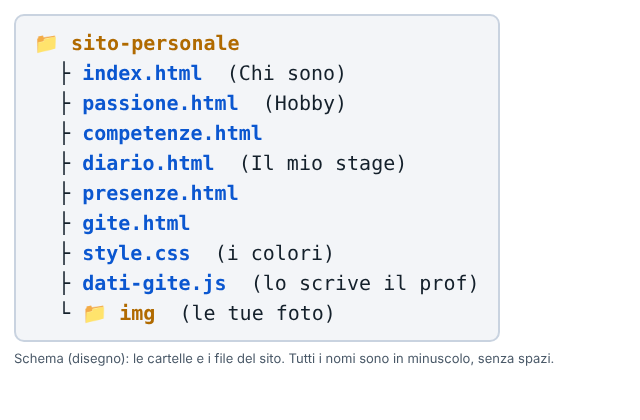
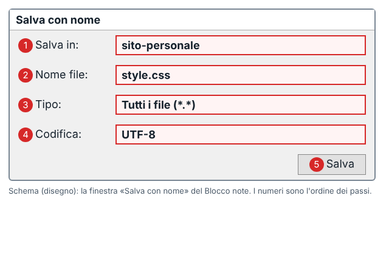
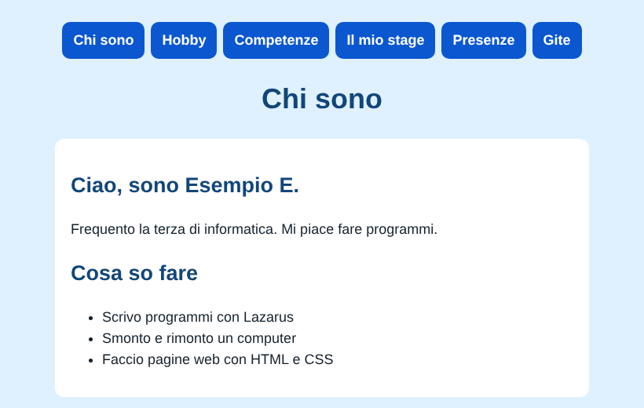
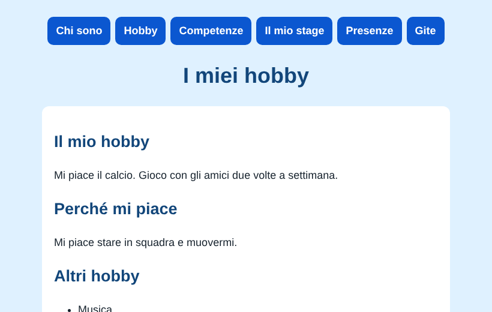
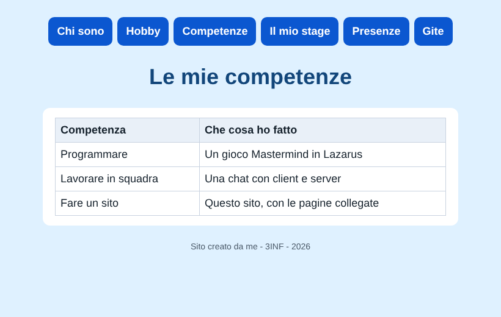
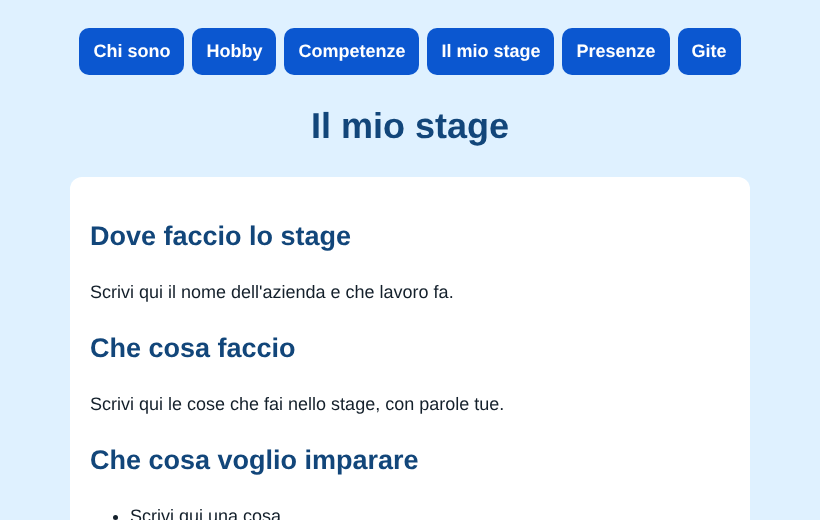
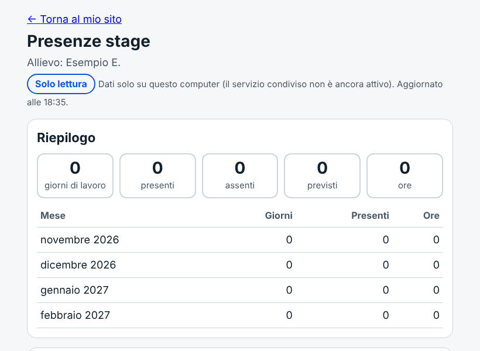
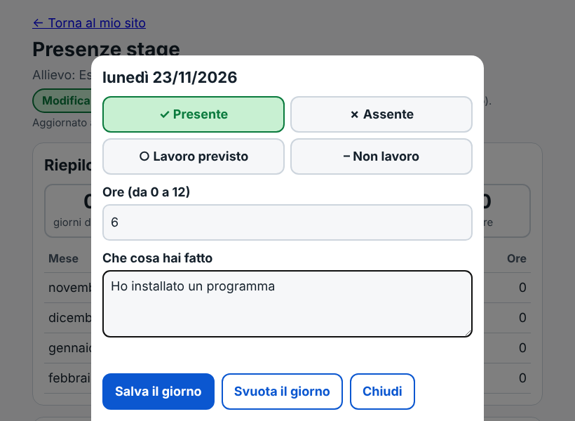
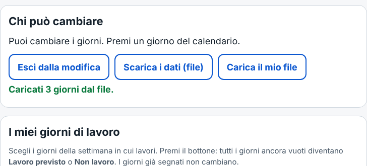
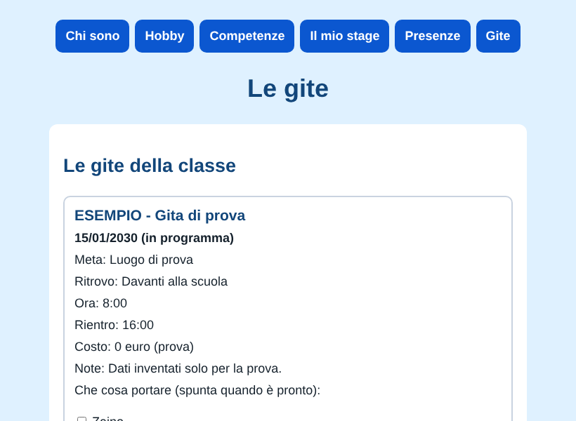

Il mio sito: Gite e Presenze stage
Alla fine hai un sito uguale a quello dei compagni: Chi sono, Hobby, Competenze, Il mio stage, Presenze e Gite. Lavori con il Blocco note e il browser. Non installi niente.
1Il tuo sito è una cartellaতোমার সাইট একটি ফোল্ডার
- Il tuo sito è una cartella sul PC.তোমার সাইট পিসির একটি ফোল্ডার।
- Dentro ci sono dei file: pagine, colori e foto.ভেতরে ফাইল আছে: পেজ, রং আর ছবি।
- Li apri con il browser. Per guardare le pagine non serve internet.ব্রাউজার দিয়ে খোলো। পেজ দেখতে ইন্টারনেট লাগে না।
- Tutti i siti hanno gli stessi nomi: così il prof trova subito ogni cosa.সব সাইটে একই নাম থাকে: তাই স্যার সবকিছু সহজে খুঁজে পান।

Lo schema del sito
2Crea la cartellaফোল্ডার বানাও
- Apri Esplora file. Vai nella cartella dove salvi i tuoi lavori (il prof ti dice quale).ফাইল এক্সপ্লোরার খোলো। যেখানে কাজ সেভ করো সেই ফোল্ডারে যাও (স্যার বলে দেবেন কোনটা)।
- Fai clic destro su un punto vuoto, poi Nuovo, poi Cartella.ফাঁকা জায়গায় রাইট-ক্লিক করো, তারপর Nuovo, তারপর Cartella।
- Scrivi questo nome (tutto minuscolo, senza spazi) e premi Invio.এই নামটি লেখো (সব ছোট হাতের অক্ষর, ফাঁকা ছাড়া) আর Invio চাপো।
sito-personale
- Apri la cartella sito-personale. Dentro crea un'altra cartella con questo nome.sito-personale ফোল্ডারটি খোলো। তার ভেতরে এই নামে আরেকটি ফোল্ডার বানাও।
img
3Il file style.css (i colori)style.css ফাইল (রং)
- Apri il Blocco note: premi il tasto Windows, scrivi Blocco note e premi Invio.Blocco note খোলো: Windows বোতাম চাপো, Blocco note লেখো, Invio চাপো।
- Premi Copia sul riquadro qui sotto. Nel Blocco note premi Ctrl + V.নিচের বাক্সে Copia চাপো। Blocco note-এ Ctrl + V চাপো।
- Premi File, poi Salva con nome.File চাপো, তারপর Salva con nome।
- Compila la finestra come nel disegno. Poi premi Salva.ছবির মতো জানালা ভরো। তারপর Salva চাপো।
/* style.css - uguale per tutti - Versione 1.0 */
/* FALLO TUO: cambia solo questi tre colori */
:root {
--sfondo: #dff1ff;
--titolo: #12467a;
--bottone: #0b57d0;
}
body {
background: var(--sfondo);
font-family: Arial, sans-serif;
margin: 0;
padding: 16px;
color: #14202b;
line-height: 1.5;
font-size: 18px;
}
h1 { color: var(--titolo); text-align: center; }
h2 { color: var(--titolo); }
.menu {
display: flex;
flex-wrap: wrap;
gap: 8px;
justify-content: center;
margin: 12px 0 20px;
}
.menu a {
background: var(--bottone);
color: white;
text-decoration: none;
padding: 10px 14px;
border-radius: 10px;
font-weight: bold;
}
.menu a:hover { opacity: 0.85; }
.scheda {
background: white;
max-width: 640px;
margin: 16px auto;
padding: 16px 20px;
border-radius: 12px;
}
.scheda img { max-width: 100%; border-radius: 8px; }
table { border-collapse: collapse; width: 100%; }
th, td { border: 1px solid #c9d3e0; padding: 6px 8px; text-align: left; }
th { background: #e9f0f8; }
.piede { text-align: center; font-size: 14px; color: #4a5968; margin-top: 24px; }
/* pagina Gite */
.gita { border: 2px solid #c9d3e0; border-radius: 10px; padding: 10px 14px; margin: 12px 0; }
.gita p { margin: 4px 0; }
.gita h3 { margin: 0 0 4px; color: var(--titolo); }
.gita .quando { font-weight: bold; }
.gita ul { list-style: none; padding-left: 0; }
.vuoto { background: #fff8e1; border: 1px solid #e6c96a; border-radius: 8px; padding: 10px 12px; }
La finestra Salva con nome
4La pagina Chi sono (index.html)Chi sono পেজ (index.html)
- Nel Blocco note premi Ctrl + N: si apre un foglio vuoto.Blocco note-এ Ctrl + N চাপো: একটি ফাঁকা পাতা খুলবে।
- Premi Copia sul riquadro. Nel foglio vuoto premi Ctrl + V.বাক্সে Copia চাপো। ফাঁকা পাতায় Ctrl + V চাপো।
- Salva con nome: cartella sito-personale, nome index.html, tipo Tutti i file, codifica UTF-8. Premi Salva.Salva con nome চাপো: ফোল্ডার sito-personale, নাম index.html, ধরন Tutti i file, কোডিং UTF-8। Salva চাপো।
- Apri la cartella sito-personale. Fai doppio clic su index.html: si apre nel browser.sito-personale ফোল্ডার খোলো। index.html-এ ডাবল ক্লিক করো: ব্রাউজারে খুলবে।
<!DOCTYPE html>
<html lang="it">
<head>
<meta charset="utf-8">
<meta name="viewport" content="width=device-width, initial-scale=1">
<title>Chi sono</title>
<link rel="stylesheet" href="style.css">
</head>
<body>
<nav class="menu">
<a href="index.html">Chi sono</a>
<a href="passione.html">Hobby</a>
<a href="competenze.html">Competenze</a>
<a href="diario.html">Il mio stage</a>
<a href="presenze.html">Presenze</a>
<a href="gite.html">Gite</a>
</nav>
<h1>Chi sono</h1>
<div class="scheda">
<h2>Ciao, sono Esempio E.</h2>
<p>Frequento la terza di informatica. Mi piace fare programmi.</p>
<h2>Cosa so fare</h2>
<ul>
<li>Scrivo programmi con Lazarus</li>
<li>Smonto e rimonto un computer</li>
<li>Faccio pagine web con HTML e CSS</li>
</ul>
</div>
<p class="piede">Sito creato da me - 3INF - 2026</p>
</body>
</html>
La pagina Chi sono nel browser
5La pagina Hobby (passione.html)Hobby পেজ (passione.html)
- Premi Ctrl + N nel Blocco note. Premi Copia sul riquadro e poi Ctrl + V.Blocco note-এ Ctrl + N চাপো। বাক্সে Copia চাপো, তারপর Ctrl + V।
- Salva con nome: cartella sito-personale, nome passione.html, tipo Tutti i file, codifica UTF-8. Premi Salva.Salva con nome চাপো: ফোল্ডার sito-personale, নাম passione.html, ধরন Tutti i file, কোডিং UTF-8। Salva চাপো।
- Apri passione.html con doppio clic.passione.html-এ ডাবল ক্লিক করে খোলো।
<!DOCTYPE html>
<html lang="it">
<head>
<meta charset="utf-8">
<meta name="viewport" content="width=device-width, initial-scale=1">
<title>I miei hobby</title>
<link rel="stylesheet" href="style.css">
</head>
<body>
<nav class="menu">
<a href="index.html">Chi sono</a>
<a href="passione.html">Hobby</a>
<a href="competenze.html">Competenze</a>
<a href="diario.html">Il mio stage</a>
<a href="presenze.html">Presenze</a>
<a href="gite.html">Gite</a>
</nav>
<h1>I miei hobby</h1>
<div class="scheda">
<h2>Il mio hobby</h2>
<p>Mi piace il calcio. Gioco con gli amici due volte a settimana.</p>
<h2>Perché mi piace</h2>
<p>Mi piace stare in squadra e muovermi.</p>
<h2>Altri hobby</h2>
<ul>
<li>Musica</li>
<li>Videogiochi</li>
</ul>
</div>
<p class="piede">Sito creato da me - 3INF - 2026</p>
</body>
</html>
La pagina Hobby
6La pagina Competenze (competenze.html)Competenze পেজ (competenze.html)
- Premi Ctrl + N nel Blocco note. Premi Copia sul riquadro e poi Ctrl + V.Blocco note-এ Ctrl + N চাপো। বাক্সে Copia চাপো, তারপর Ctrl + V।
- Salva con nome: cartella sito-personale, nome competenze.html, tipo Tutti i file, codifica UTF-8. Premi Salva.Salva con nome চাপো: ফোল্ডার sito-personale, নাম competenze.html, ধরন Tutti i file, কোডিং UTF-8। Salva চাপো।
- Apri competenze.html con doppio clic.competenze.html-এ ডাবল ক্লিক করে খোলো।
<!DOCTYPE html>
<html lang="it">
<head>
<meta charset="utf-8">
<meta name="viewport" content="width=device-width, initial-scale=1">
<title>Le mie competenze</title>
<link rel="stylesheet" href="style.css">
</head>
<body>
<nav class="menu">
<a href="index.html">Chi sono</a>
<a href="passione.html">Hobby</a>
<a href="competenze.html">Competenze</a>
<a href="diario.html">Il mio stage</a>
<a href="presenze.html">Presenze</a>
<a href="gite.html">Gite</a>
</nav>
<h1>Le mie competenze</h1>
<div class="scheda">
<table>
<tr><th>Competenza</th><th>Che cosa ho fatto</th></tr>
<tr><td>Programmare</td><td>Un gioco Mastermind in Lazarus</td></tr>
<tr><td>Lavorare in squadra</td><td>Una chat con client e server</td></tr>
<tr><td>Fare un sito</td><td>Questo sito, con le pagine collegate</td></tr>
</table>
</div>
<p class="piede">Sito creato da me - 3INF - 2026</p>
</body>
</html>
La pagina Competenze
7La pagina Il mio stage (diario.html)Il mio stage পেজ (diario.html)
- Premi Ctrl + N nel Blocco note. Premi Copia sul riquadro e poi Ctrl + V.Blocco note-এ Ctrl + N চাপো। বাক্সে Copia চাপো, তারপর Ctrl + V।
- Salva con nome: cartella sito-personale, nome diario.html, tipo Tutti i file, codifica UTF-8. Premi Salva.Salva con nome চাপো: ফোল্ডার sito-personale, নাম diario.html, ধরন Tutti i file, কোডিং UTF-8। Salva চাপো।
- Apri diario.html con doppio clic.diario.html-এ ডাবল ক্লিক করে খোলো।
<!DOCTYPE html>
<html lang="it">
<head>
<meta charset="utf-8">
<meta name="viewport" content="width=device-width, initial-scale=1">
<title>Il mio stage</title>
<link rel="stylesheet" href="style.css">
</head>
<body>
<nav class="menu">
<a href="index.html">Chi sono</a>
<a href="passione.html">Hobby</a>
<a href="competenze.html">Competenze</a>
<a href="diario.html">Il mio stage</a>
<a href="presenze.html">Presenze</a>
<a href="gite.html">Gite</a>
</nav>
<h1>Il mio stage</h1>
<div class="scheda">
<h2>Dove faccio lo stage</h2>
<p>Scrivi qui il nome dell'azienda e che lavoro fa.</p>
<h2>Che cosa faccio</h2>
<p>Scrivi qui le cose che fai nello stage, con parole tue.</p>
<h2>Che cosa voglio imparare</h2>
<ul>
<li>Scrivi qui una cosa</li>
<li>Scrivi qui un'altra cosa</li>
</ul>
<p><a href="presenze.html">Vai alle mie presenze, giorno per giorno</a></p>
</div>
<p class="piede">Sito creato da me - 3INF - 2026</p>
</body>
</html>
La pagina Il mio stage
9Presenze stage: prendi la paginaPresenze stage: পেজটি নাও
- Apri la pagina «Copia la pagina Presenze stage».«Copia la pagina Presenze stage» পেজটি খোলো।
- Scegli il tuo nome nell'elenco.তালিকা থেকে তোমার নাম বেছে নাও।
- Premi il bottone blu «2. Scarica il file presenze.html».নীল বোতাম «2. Scarica il file presenze.html» চাপো।
- Apri la cartella Download. Taglia il file presenze.html con Ctrl + X.Download ফোল্ডার খোলো। presenze.html ফাইলটি Ctrl + X দিয়ে কাটো।
- Apri la cartella sito-personale e incolla il file con Ctrl + V.sito-personale ফোল্ডার খোলো আর Ctrl + V দিয়ে ফাইলটি রাখো।
Apri «Copia la pagina Presenze stage»
Si apre in una scheda nuova: questa pagina resta aperta.
10Presenze stage: la tua passwordPresenze stage: তোমার পাসওয়ার্ড
- Fai doppio clic su presenze.html. Premi il bottone «Modifica (solo io)».presenze.html-এ ডাবল ক্লিক করো। «Modifica (solo io)» বোতাম চাপো।
- Scegli una password di almeno 8 caratteri e scrivila due volte. Ricordala: la dimentichi, la azzera solo il prof.কমপক্ষে ৮ অক্ষরের একটি পাসওয়ার্ড বেছে দুইবার লেখো। মনে রাখো: ভুলে গেলে শুধু স্যার আবার শুরু করতে পারেন।
- Premi «Entra». In alto leggi «Modifica».«Entra» চাপো। উপরে «Modifica» লেখা দেখবে।

La pagina Presenze: scelta della password
11Presenze stage: segna un giornoPresenze stage: একটি দিন চিহ্নিত করো
- Premi il numero del giorno nel calendario. Lo stage va dal 23/11/2026 al 18/02/2027, da lunedì a sabato.ক্যালেন্ডারে দিনের নম্বরে চাপো। স্টেজ ২৩/১১/২০২৬ থেকে ১৮/০২/২০২৭, সোমবার থেকে শনিবার।
- Premi «Presente». Scrivi le ore.«Presente» চাপো। ঘণ্টা লেখো।
- In «Che cosa hai fatto» scrivi poche parole: ogni giorno di presenza ha la sua nota.«Che cosa hai fatto»-তে অল্প কথায় লেখো: প্রতিটি উপস্থিতির দিনের একটি নোট থাকে।
- Premi «Salva il giorno». Il giorno diventa verde.«Salva il giorno» চাপো। দিনটি সবুজ হবে।

Il giorno: Presente, ore e nota

Il calendario con tre giorni segnati
12Presenze stage: la copia di sicurezzaPresenze stage: নিরাপত্তার কপি
- I giorni restano nel browser di questo PC. Per non perderli salva un file.দিনগুলো এই পিসির ব্রাউজারে থাকে। হারিয়ে না যাওয়ার জন্য একটি ফাইল সেভ করো।
- Premi «Scarica i dati (file)». Metti il file presenze-stage.json nella cartella sito-personale.«Scarica i dati (file)» চাপো। presenze-stage.json ফাইলটি sito-personale ফোল্ডারে রাখো।
- Se cambi PC o browser: apri presenze.html, premi «Modifica (solo io)» e poi «Carica il mio file».পিসি বা ব্রাউজার বদলালে: presenze.html খোলো, «Modifica (solo io)» চাপো, তারপর «Carica il mio file»।
- Quando il prof attiva il servizio condiviso, ogni «Salva il giorno» arriva anche a lui. Il prof ti dice quando.স্যার যখন শেয়ার্ড সার্ভিস চালু করবেন, প্রতিটি «Salva il giorno» তাঁর কাছেও যাবে। কখন, স্যার বলবেন।
13Gite: il file del profGite: স্যারের ফাইল
- Le gite le scrive il prof in un file. Tu non lo cambi.গিটের তথ্য স্যার একটি ফাইলে লেখেন। তুমি এটি বদলাবে না।
- Premi il bottone per scaricare dati-gite.js e mettilo nella cartella sito-personale.dati-gite.js ডাউনলোড করার বোতাম চাপো আর ফাইলটি sito-personale ফোল্ডারে রাখো।
- Quando il prof dice che ci sono gite nuove, scaricalo di nuovo e sostituisci il file.স্যার নতুন গিট আছে বললে ফাইলটি আবার ডাউনলোড করে আগেরটির জায়গায় রাখো।
/* dati-gite.js - lo scrive il prof, uguale per tutti - Versione 1.0 */
/* Il prof aggiunge una gita per volta, dentro le parentesi quadre, separate da una virgola. Esempio da copiare:
{ titolo: "", data: "AAAA-MM-GG", meta: "", ritrovo: "", ora: "", rientro: "", costo: "", portare: ["", ""], note: "" }
*/
var GITE = [
];Il file è anche in questo riquadro. Se il bottone non scarica, copia il riquadro e salva il file con il nome dati-gite.js.
14Gite: la pagina gite.htmlGite: gite.html পেজ
- Premi Ctrl + N nel Blocco note. Premi Copia sul riquadro e poi Ctrl + V.Blocco note-এ Ctrl + N চাপো। বাক্সে Copia চাপো, তারপর Ctrl + V।
- Salva con nome: cartella sito-personale, nome gite.html, tipo Tutti i file, codifica UTF-8. Premi Salva.Salva con nome চাপো: ফোল্ডার sito-personale, নাম gite.html, ধরন Tutti i file, কোডিং UTF-8। Salva চাপো।
- Apri gite.html con doppio clic. Se il prof non ha ancora scritto le gite, vedi un avviso giallo: va bene.gite.html-এ ডাবল ক্লিক করে খোলো। স্যার এখনো গিট না লিখলে হলুদ বার্তা দেখবে: ঠিক আছে।
<!DOCTYPE html>
<html lang="it">
<head>
<meta charset="utf-8">
<meta name="viewport" content="width=device-width, initial-scale=1">
<title>Le gite</title>
<link rel="stylesheet" href="style.css">
<script src="dati-gite.js"></script>
</head>
<body>
<nav class="menu">
<a href="index.html">Chi sono</a>
<a href="passione.html">Hobby</a>
<a href="competenze.html">Competenze</a>
<a href="diario.html">Il mio stage</a>
<a href="presenze.html">Presenze</a>
<a href="gite.html">Gite</a>
</nav>
<h1>Le gite</h1>
<div class="scheda">
<h2>Le gite della classe</h2>
<div id="elenco"></div>
</div>
<div class="scheda">
<h2>La mia gita</h2>
<p><b>Dove siamo andati:</b> Scrivi qui il posto.</p>
<p><b>Che cosa ho visto:</b> Scrivi qui due o tre cose.</p>
<p><b>Che cosa ho imparato:</b> Scrivi qui una cosa.</p>
</div>
<p class="piede">Sito creato da me - 3INF - 2026</p>
<script>
var elenco = document.getElementById("elenco");
var oggi = new Date().toISOString().slice(0, 10);
var lista = (typeof GITE !== "undefined") ? GITE : [];
function riga(testo, valore) {
if (!valore) return null;
var p = document.createElement("p");
p.textContent = testo + ": " + valore;
return p;
}
function salvata(chiave) {
try { return localStorage.getItem(chiave) === "1"; } catch (e) { return false; }
}
function salva(chiave, valore) {
try { localStorage.setItem(chiave, valore ? "1" : "0"); } catch (e) {}
}
if (lista.length === 0) {
var v = document.createElement("p");
v.className = "vuoto";
v.textContent = "Il prof non ha ancora scritto le gite. Torna a vedere più avanti.";
elenco.appendChild(v);
}
lista.forEach(function (g, n) {
var box = document.createElement("div");
box.className = "gita";
var h = document.createElement("h3");
h.textContent = g.titolo || "Gita";
box.appendChild(h);
var q = document.createElement("p");
q.className = "quando";
q.textContent = g.data ? (g.data.split("-").reverse().join("/") + (g.data >= oggi ? " (in programma)" : " (già fatta)")) : "data da definire";
box.appendChild(q);
[["Meta", g.meta], ["Ritrovo", g.ritrovo], ["Ora", g.ora], ["Rientro", g.rientro], ["Costo", g.costo], ["Note", g.note]].forEach(function (c) {
var r = riga(c[0], c[1]);
if (r) box.appendChild(r);
});
if (g.portare && g.portare.length) {
var t = document.createElement("p");
t.textContent = "Che cosa portare (spunta quando è pronto):";
box.appendChild(t);
var ul = document.createElement("ul");
g.portare.forEach(function (cosa, k) {
var chiave = "gita-" + n + "-" + k;
var li = document.createElement("li");
var lab = document.createElement("label");
var cb = document.createElement("input");
cb.type = "checkbox";
cb.checked = salvata(chiave);
cb.addEventListener("change", function () { salva(chiave, cb.checked); });
lab.appendChild(cb);
lab.appendChild(document.createTextNode(" " + cosa));
li.appendChild(lab);
ul.appendChild(li);
});
box.appendChild(ul);
}
elenco.appendChild(box);
});
</script>
</body>
</html>
La pagina Gite (con una gita di prova)
15Una tua foto (se vuoi)তোমার একটি ছবি (ইচ্ছা হলে)
- Metti una tua foto nella cartella img. Chiamala foto.jpg. Usa solo foto che vuoi far vedere.img ফোল্ডারে তোমার একটি ছবি রাখো। নাম দাও foto.jpg। শুধু সেই ছবি দাও যা দেখাতে চাও।
- In index.html, sotto la riga con Ciao, sono, aggiungi questa riga. Premi Ctrl + S.index.html-এ «Ciao, sono» লাইনের নিচে এই লাইনটি যোগ করো। Ctrl + S চাপো।
<img src="img/foto.jpg" alt="La mia foto">
16Controlla la tua cartellaতোমার ফোল্ডার পরীক্ষা করো
- Premi il bottone «Scegli la cartella sito-personale» e scegli la tua cartella.«Scegli la cartella sito-personale» বোতাম চাপো আর তোমার ফোল্ডার বেছে নাও।
- Ogni riga ha una spunta verde o una croce rossa. Sotto la croce c'è come si sistema.প্রতিটি লাইনে সবুজ টিক বা লাল ক্রস আছে। ক্রসের নিচে কীভাবে ঠিক করবে লেখা আছে।
- Il controllo legge la cartella solo sul tuo PC e non manda niente a nessuno.পরীক্ষা শুধু তোমার পিসিতে ফোল্ডার পড়ে, কাউকে কিছু পাঠায় না।
Il browser ti chiede di «caricare» la cartella: non viene caricato niente. Il controllo gira solo sul tuo PC.
17Consegna il sitoসাইট জমা দাও
- Fai clic destro sulla cartella sito-personale. Premi Invia a, poi Cartella compressa.sito-personale ফোল্ডারে রাইট-ক্লিক করো। Invia a চাপো, তারপর Cartella compressa।
- Si crea il file sito-personale.zip accanto alla cartella.ফোল্ডারের পাশে sito-personale.zip ফাইল তৈরি হবে।
- Apri Classroom e il compito di consegna che ti indica il prof. Premi Aggiungi o crea, poi File.Classroom আর স্যারের বলা জমার কাজটি খোলো। Aggiungi o crea চাপো, তারপর File।
- Scegli sito-personale.zip e premi Consegna.sito-personale.zip বেছে নাও আর Consegna চাপো।
Se qualcosa non va
| Problema | Come si sistema |
|---|---|
| Il file si chiama style.css.txt | Nel Salva con nome il Tipo deve essere «Tutti i file». Riapri il Salva con nome e correggi il nome. Tipo অবশ্যই «Tutti i file» হতে হবে। Salva con nome আবার খুলে নাম ঠিক করো। |
| La pagina è senza colori | Manca il file style.css nella cartella, oppure ha un nome diverso. Premi F5 nel browser. ফোল্ডারে style.css নেই বা নাম আলাদা। ব্রাউজারে F5 চাপো। |
| Le lettere strane (è diventa è) | Nel Salva con nome la Codifica deve essere UTF-8. Salva con nome-এ Codifica অবশ্যই UTF-8 হতে হবে। |
| Un bottone del menu dà «file non trovato» | Quel file non c'è ancora nella cartella o ha un nome diverso. I nomi sono tutti minuscoli, senza spazi. ফাইলটি এখনো ফোল্ডারে নেই বা নাম আলাদা। সব নাম ছোট হাতের অক্ষরে, ফাঁকা ছাড়া। |
| Presenze: «Modifica (solo io)» non entra | La password è sbagliata. Riprova. Se l'hai dimenticata, la azzera solo il prof. পাসওয়ার্ড ভুল। আবার চেষ্টা করো। ভুলে গেলে স্যারকে বলো আবার শুরু করতে। |
| Presenze: ho cambiato PC e i giorni non ci sono | Apri presenze.html, «Modifica (solo io)», poi «Carica il mio file» e scegli presenze-stage.json. presenze.html খোলো, «Modifica (solo io)», তারপর «Carica il mio file» চাপো আর presenze-stage.json বেছে নাও। |
Limite: il sito è una cartella sul tuo PC: non lo vede nessun altro finché non lo consegni. I giorni delle presenze restano nel browser di questo PC finché il prof non attiva il servizio condiviso: per questo c'è il file di sicurezza.
Versione 1.0 · 17/11/2026 · PDF: italiano · italiano + বাংলা